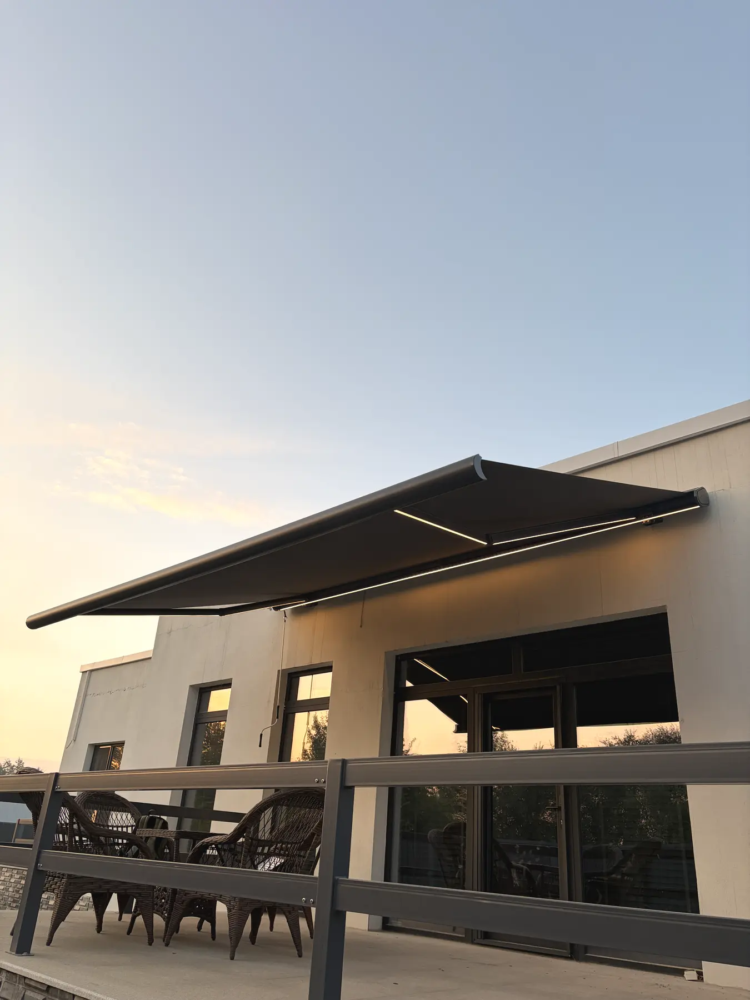

МАРКИЗЫ
Комфортная тень
в нужный момент.
Кассетные и открытые маркизы для окон, террас, ресторанов, кафе и коммерческих фасадов.
КАССЕТНЫЕ И ОТКРЫТЫЕ
Выбор под архитектуру и задачу
Кассетная модель полностью закрывает ткань и механизм внутри корпуса. Открытая модель имеет более простую конструкцию.
- Ручное или автоматическое управление
- Электропривод и датчик ветра
- Разные размеры и варианты ткани
- LED-подсветка в зависимости от комплектации
ДЕТАЛИ И МАСШТАБ
Тень без визуальной тяжести

ГАРАНТИЯ
Понятные условия
на каждый элемент
- 01 Ткань · стойкость к выгоранию 10 лет
- 02 Электропривод, автоматика, пульт, датчик ветра и LED-подсветка 3 года
- 03 Конструкция: кассета, локти, вал, комплектующие и порошковое покрытие 3 года
- 04 Монтажные работы 1 год